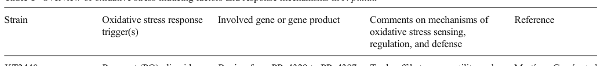

OxyR (PP_5309) is a LysR-type transcriptional regulator (LTTR) that serves as the master sensor and regulator of the hydrogen-peroxide oxidative-stress response in Pseudomonas putida KT2440. Like other OxyR proteins, it is a cytoplasmic, constitutively expressed homotetramer that senses H2O2 directly through conserved cysteine residues; oxidation forms an intramolecular disulfide bond that triggers a conformational change altering its DNA-binding and transcription-modulating activity. OxyR binds palindromic operator sequences upstream of antioxidant genes and controls expression of the principal peroxide-detoxifying enzymes, including the two major catalases KatA and KatB and the alkyl hydroperoxide reductase/peroxiredoxin subunit AhpC. Architecturally it has the canonical LTTR organization, with an N-terminal winged helix-turn-helix DNA-binding domain and a C-terminal effector/regulatory (periplasmic-binding-protein-like) domain that mediates redox sensing and oligomerization. As a dual regulator it can both activate and repress transcription depending on target and redox state, and it autoregulates its own promoter. Through this regulon it coordinates removal of reactive oxygen species and maintenance of redox homeostasis, contributing to survival under oxidative stress.
| GO Term | Evidence | Action | Reason |
|---|---|---|---|
|
GO:0003677
DNA binding
|
IEA
GO_REF:0000104 |
ACCEPT |
Summary: OxyR is a LysR-type transcriptional regulator with an N-terminal winged helix-turn-helix domain; direct DNA binding to operator sequences upstream of katA, katB and ahpC is experimentally demonstrated (purified OxyR bound these sequences).
Reason: Well-supported by the HTH domain architecture and by experimental DNA-binding data. A core molecular activity, though the more specific transcription-factor term below better captures the function.
|
|
GO:0003700
DNA-binding transcription factor activity
|
IEA
GO_REF:0000120 |
ACCEPT |
Summary: OxyR is a sequence-specific DNA-binding transcription factor of the LysR/OxyR family that activates and represses target promoters in response to peroxide.
Reason: This is the core molecular function. Strongly supported by family assignment, domain architecture, and experimental promoter binding/regulation data in P. putida.
|
|
GO:0006351
DNA-templated transcription
|
IEA
GO_REF:0000104 |
MARK AS OVER ANNOTATED |
Summary: This term denotes the act of transcription itself (the polymerase reaction), which OxyR does not perform; OxyR regulates transcription rather than carrying it out.
Reason: OxyR is a regulator, not part of the transcription machinery. The accurate process annotation is regulation of transcription, not the transcription process per se. This is a generic UniProtKB keyword-derived IEA.
|
|
GO:0006355
regulation of DNA-templated transcription
|
IEA
GO_REF:0000120 |
ACCEPT |
Summary: OxyR regulates transcription of its peroxide-defense regulon. This high-level process term is correct but could be made more specific (positive/negative regulation).
Reason: Accurate as a parent process term for a transcriptional regulator. Specific directional regulation is captured by other annotations and core_functions.
|
|
GO:0032993
protein-DNA complex
|
IEA
GO_REF:0000118 |
ACCEPT |
Summary: As a DNA-binding transcription factor, OxyR forms part of a protein-DNA complex when bound to operator sequences.
Reason: Consistent with the demonstrated sequence-specific DNA binding. Reasonable cellular-component annotation for a DNA-binding regulator, though non-core.
|
|
GO:0045892
negative regulation of DNA-templated transcription
|
EXP
PMID:17107553 OxyR regulated the expression of two major catalases, KatA a... |
ACCEPT |
Summary: CollecTF experimental annotation. OxyR is a dual regulator; Hishinuma et al. (2006) characterized OxyR binding and regulation of the katA, katB and ahpC promoters in P. putida KT2442, and OxyR is known to repress certain targets and autorepress its own gene. The curator (CollecTF) read the full text and assigned this term from experimental binding-site evidence.
Reason: Experimental annotation (EXP, two ECO codes) from CollecTF, a reliable resource, based on demonstrated operator binding. Per guidelines, do not overrule an experimental annotation whose full text the curator read. OxyR's dual activator/repressor nature makes negative regulation biologically appropriate alongside positive regulation.
|
|
GO:0034599
cellular response to oxidative stress
|
EXP
PMID:17107553 OxyR regulated the expression of two major catalases, KatA a... |
NEW |
Summary: OxyR controls the peroxide-defense regulon in P. putida, including KatA, KatB, and AhpC, and is therefore directly involved in the cellular response to oxidative stress.
Reason: The top-level core function already records OxyR's oxidative-stress response role. Adding this NEW row makes that process claim explicit in the annotation review block and is supported by the cached PMID abstract plus Asta/Falcon identity and pathway summaries.
Supporting Evidence:
PMID:17107553
These results are consistent with the conclusion, distinct from those observed in an opportunistic pathogen Pseudomonas aeruginosa, that OxyR controlled expression of all the principal peroxide-degrading enzymes in P. putida.
file:PSEPK/oxyR/oxyR-deep-research-asta.md
protein_description: 'SubName: Full=Oxidative and nitrosative stress transcriptional
file:PSEPK/oxyR/oxyR-deep-research-falcon.md
**Primary biological process:** peroxide/oxidative stress response; regulation of peroxide detoxification and thiol redox homeostasis.
|
Q: Does P. putida OxyR also regulate a nitrosative-stress (RNS) response, as the UniProt "dual regulator" name implies, or is its in vivo role restricted to peroxide defense?
Q: To what extent is the RecG helicase requirement for OxyR target induction (reported in Pseudomonas) operative for the katA/katB/ahpC regulon in KT2440?
Experiment: ChIP-seq or genome-wide DAP-seq of OxyR under peroxide stress in KT2440 to define the complete regulon and distinguish activated versus repressed targets.
Experiment: Construct a clean oxyR deletion (or cysteine point mutants) and assess H2O2 sensitivity, catalase activity, and transcriptome to confirm direct versus indirect regulatory roles.
This report is retrieval-only and is generated directly from Asta results.
search_papers_by_relevance with snippet_search.The research report should be a detailed narrative explaining the function, biological processes, and localization of the gene product. Citations should be given for all claims.
You should prioritize authoritative reviews and primary scientific literature when conducting research. You can supplement
this with annotations you find in gene/protein databases, but these can be outdated or inaccurate.
We are specifically interested in the primary function of the gene - for enzymes, what reaction is catalyzed, and what is the substrate specificity? For transporters, what is the substrate? For structural proteins or adapters, what is the broader structural role? For signaling molecules, what is the role in the pathway.
We are interested in where in or outside the cell the gene product carries out its function.
We are also interested in the signaling or biochemical pathways in which the gene functions. We are less interested in broad pleiotropic effects, except where these elucidate the precise role.
Include evidence where possible. We are interested in both experimental evidence as well as inference from structure, evolution, or bioinformatic analysis. Precise studies should be prioritized over high-throughput, where available.
Target identity. The requested protein is OxyR from Pseudomonas putida strain KT2440 (ATCC 47054/DSM 6125/KT2440), UniProt Q88C74, gene oxyR, ordered locus PP_5309. A foundational KT2440 genome analysis explicitly links PP5309 to an OxyR-like LysR-family transcriptional regulator: OxyR is described as sensing the cytoplasmic redox state and coordinating multigene oxidative-stress defense; “this determinant is likely to be PP5309,” and PP5309 shows high sequence identity to OxyR homologs in other Pseudomonas species (e.g., 93% identity over 308 aa to P. syringae putative OxyR; ~40% to E. coli OxyR). (santos2004insightsintothe pages 16-18)
Family/domain alignment. OxyR is a LysR-type transcriptional regulator (LTTR), consistent with UniProt’s LysR-family assignment and LysR-like domain architecture (N-terminal winged HTH DNA-binding domain; C-terminal regulatory/oligomerization region). (demeester2024fundamentalsandexceptions pages 22-23, demeester2024fundamentalsandexceptions pages 4-5)
Conclusion of verification. The gene symbol oxyR in this report refers only to the KT2440 PP_5309/Q88C74 regulator as above; other oxyR genes in other species are used strictly as comparative context and are explicitly labeled as such. (santos2004insightsintothe pages 16-18)
Oxidative stress in bacteria refers to damaging chemistry driven by reactive oxygen species (ROS), particularly hydrogen peroxide (H2O2) and derived radicals; defense requires coordinated transcriptional programs to detoxify peroxides and maintain thiol redox homeostasis. In P. putida, peroxide defense relies heavily on catalases, peroxiredoxins, and thioredoxin/glutathione recycling systems that maintain protein thiols and remove peroxides. (kim2014oxidativestressresponse pages 5-6)
Nitrosative stress is driven by reactive nitrogen species (RNS), e.g., nitric oxide (NO) donors. In the retrieved KT2440-focused sources, direct, P. putida-specific evidence that OxyR (PP_5309) is a primary nitrosative-stress regulator was not found; OxyR’s best-supported primary role in KT2440 is peroxide/oxidative-stress control. (kim2014oxidativestressresponse pages 5-6, santos2004insightsintothe pages 16-18)
LTTRs are the largest family of bacterial transcription factors and are widely used as natural “sensor–regulators.” The 2024 ACS Synthetic Biology review describes the canonical LTTR mechanism (“sliding dimer”), in which (i) dimers bind a high-affinity regulatory site (RS) and lower-affinity activation sites (AS1/AS2), (ii) tetramerization and DNA bending shape promoter accessibility, and (iii) signal/ligand-dependent conformational changes reposition dimers and reduce DNA bending to recruit RNA polymerase (RNAP) and activate transcription. The review also provides biosensor-centric design guidance: TF expression level, promoter architecture, and TF binding-site sequence can tune dynamic range and leakiness. (demeester2024fundamentalsandexceptions pages 6-7, demeester2024fundamentalsandexceptions pages 5-6)
OxyR is a redox-sensitive LTTR that senses H2O2 through cysteine chemistry rather than binding a classical small-molecule effector. In Pseudomonas and other bacteria, oxidation results in an intramolecular disulfide and conformational changes that alter DNA binding and transcriptional activation. In KT2440-oriented literature, OxyR is described as constitutively produced, oxidized by H2O2, and the oxidized form binds promoters and activates transcription via RNAP contacts. (kim2014oxidativestressresponse pages 5-6, yeom2012atpdependentrecghelicase pages 1-2)
A recent LTTR review further emphasizes that OxyR’s H2O2 sensing has been captured in structural snapshots and involves disulfide formation and rapid disulfide-exchange reactions that change DNA contacts and dimer conformation. (demeester2024fundamentalsandexceptions pages 22-23)
Primary function (functional annotation): OxyR (PP_5309) is a transcriptional regulator that coordinates the hydrogen peroxide (H2O2) oxidative-stress response, activating expression of peroxide-detoxifying enzymes and redox-homeostasis proteins. (kim2014oxidativestressresponse pages 5-6, santos2004insightsintothe pages 16-18)
Because OxyR is not an enzyme or transporter, the “substrate specificity” concept applies to its signal and regulatory targets: the primary activating signal is H2O2/peroxide oxidation of OxyR, and the principal output targets are genes encoding catalases and peroxiredoxin/thiol-redox systems. (kim2014oxidativestressresponse pages 5-6, yeom2012atpdependentrecghelicase pages 1-2)
OxyR is described as sensing the cytoplasmic redox state, consistent with a cytoplasmic DNA-binding transcription factor acting at chromosomal promoters. No evidence in the retrieved sources indicates membrane, periplasmic, or extracellular localization of OxyR itself. (santos2004insightsintothe pages 16-18)
Across KT2440/KT2442-focused sources, the best-supported OxyR-regulated genes are:
Additional OxyR-associated genes reported in KT2440 work include trx-2, hslO, and PP0877 (reported as OxyR regulon members in the context of RecG-dependent induction). (kim2014oxidativestressresponse pages 5-6, yeom2012atpdependentrecghelicase pages 5-6)
A major ecological/physiological implication is that OxyR couples peroxide detoxification (catalases/peroxiredoxins) to maintenance of thiol-disulfide balance (thioredoxin reductase), enabling survival in pollutant-rich environments that generate oxidative stress. (kim2014oxidativestressresponse pages 5-6)
Quantitative evidence supporting OxyR-linked oxidative defense in P. putida includes:
These measurements support an annotation in which OxyR drives a coordinated program of peroxide detoxification and thiol redox maintenance, with measurable downstream growth/fitness consequences. (hishinuma2008oxyrisinvolved pages 3-5, yeom2012atpdependentrecghelicase pages 5-6)
A distinctive feature emphasized in KT2440 literature is that OxyR-dependent transcription can require ATP-dependent RecG helicase activity.
The oxidative-stress response schematic and the curated KT2440/KT2442 stress-response table in Kim & Park (2014) visually summarize this OxyR–RecG cooperation and peroxide-defense targets (KatA/KatB/AhpC). (kim2014oxidativestressresponse media e2e2836b, kim2014oxidativestressresponse media b3bd9dad)
A KT2440 genome analysis reported PP5309 (OxyR-like regulator) is located within and co-transcribed with exbBD and tonB genes involved in ferric-siderophore uptake (TonB-dependent transport). This suggests an architectural linkage between redox regulation and iron acquisition systems in the KT2440 genome context (iron metabolism is tightly connected to oxidative stress because iron can potentiate Fenton chemistry). (santos2004insightsintothe pages 16-18)
Important note: Other KT2440-focused work emphasizes an oxyR–recG operon context in Pseudomonas species (including P. putida), reflecting possible differences in annotation focus, operon boundaries, or strain-to-strain genomic organization in the broader literature. The safest KT2440-specific conclusion from retrieved evidence is: PP_5309 is OxyR-like and sits in a neighborhood implicated in iron uptake (exbBD/tonB) and oxidative-stress defense; and functional OxyR-mediated induction can involve RecG-dependent promoter remodeling in Pseudomonas. (santos2004insightsintothe pages 16-18, yeom2012atpdependentrecghelicase pages 1-2)
Although not specific to KT2440 PP_5309, 2024 literature illustrates how OxyR/LTTR systems are leveraged in real engineering contexts.
A 2024 review frames LTTRs as promising biosensor inputs, emphasizing low leakiness and fast ligand-responsive activation in many LTTRs, and highlights that response curves can be tuned via regulator expression, promoter architecture, and TF binding-site engineering. (demeester2024fundamentalsandexceptions pages 5-6, demeester2024fundamentalsandexceptions pages 10-11)
This is directly relevant to OxyR because redox-responsive regulators can be used as transcriptional sensors for oxidative stress states in engineered microbes. (demeester2024fundamentalsandexceptions pages 14-14)
A 2024 Nucleic Acids Research study demonstrates a modern approach to rewiring oxidative-stress regulation using iModulons (machine-learning-defined co-regulated gene modules) as engineering “parts.” The study reports:
These results show OxyR-regulated programs are actionable levers for industrially relevant robustness engineering.
A 2024 ACS Synthetic Biology study integrates 7,670 adaptive laboratory evolution (ALE) mutations across 59 experiments (72 unique conditions) with iModulon activity data, identifying OxyR and other regulators as mutation “hotspots” under ROS conditions. As a motivating example, a melatonin-producing E. coli strain was unable to grow after 72 h in 10 mM H2O2 in minimal medium, while wild type grew similarly with/without peroxide, illustrating the industrial relevance of oxidative stress control. (phaneuf2024metaanalysisdrivenstrain pages 2-4)
1) OxyR is the peroxide-stress “switchboard”: In P. putida, the clearest direct evidence supports OxyR as a peroxide-responsive transcriptional activator controlling catalases (katA/katB), alkyl hydroperoxide reductase/peroxiredoxin (ahpC/ahpF), and thioredoxin reductase (trxB), coordinating peroxide detoxification with thiol redox homeostasis. (hishinuma2008oxyrisinvolved pages 3-5, kim2014oxidativestressresponse pages 5-6)
2) Promoter architecture and DNA remodeling matter in Pseudomonas: KT2440-focused work highlights a non-canonical mechanistic layer—RecG helicase-dependent promoter remodeling—that can be necessary for OxyR regulon induction. This adds complexity beyond the “classic” LTTR sliding-dimer model and aligns with the 2024 LTTR review’s emphasis that many LTTRs deviate from a single canonical mechanism. (yeom2012atpdependentrecghelicase pages 1-2, demeester2024fundamentalsandexceptions pages 14-16)
3) Linkage to iron uptake is plausible and biologically meaningful: The KT2440 genome context places PP_5309 within a siderophore/TonB-associated region (exbBD/tonB), consistent with a broader theme that oxidative stress defense and iron homeostasis are intertwined (iron catalyzes ROS chemistry). This supports a hypothesis that OxyR’s local genomic context may integrate redox state with iron acquisition or vice versa in KT2440. (santos2004insightsintothe pages 16-18)
4) Nitrosative-stress regulation by KT2440 OxyR remains under-supported in retrieved evidence: While OxyR can participate in nitrosative stress responses in other bacteria (and the broader oxidative/nitrosative stress landscape is interconnected), the KT2440-specific texts retrieved here did not provide direct experimental evidence that PP_5309 is a primary NO/RNS-responsive regulator. The most defensible annotation from current evidence is “oxidative/peroxide stress transcriptional regulator,” with nitrosative stress listed as possible/indirect or species-dependent. (kim2014oxidativestressresponse pages 5-6, santos2004insightsintothe pages 16-18)
| Aspect | Evidence summary | Key citations |
|---|---|---|
| identity | The target matches the requested protein: PP_5309 in Pseudomonas putida KT2440 is identified as the likely OxyR homolog, a LysR-family transcriptional regulator involved in oxidative-stress defense. The KT2440 genome paper reports 93% identity over 308 aa to putative OxyR proteins of P. syringae strains and ~40% identity to E. coli OxyR, supporting correct gene/protein assignment for UniProt Q88C74. | (santos2004insightsintothe pages 16-18) |
| family/domains | OxyR belongs to the LysR-type transcriptional regulator (LTTR) family. LTTRs have a conserved N-terminal winged helix-turn-helix DNA-binding domain and a C-terminal effector/redox-sensing and oligomerization domain; OxyR is a redox-sensing LTTR rather than a classical small-molecule-responsive one. | (demeester2024fundamentalsandexceptions pages 22-23, demeester2024fundamentalsandexceptions pages 6-7, demeester2024fundamentalsandexceptions pages 4-5) |
| sensing/activation | In P. putida, OxyR is constitutively present and becomes activated by oxidation in response to H2O2, after which the oxidized form binds promoters and activates transcription through RNA polymerase contacts. Broader OxyR literature describes cysteine-dependent disulfide formation/exchange as the biochemical basis of this redox switch. | (kim2014oxidativestressresponse pages 5-6, yeom2012atpdependentrecghelicase pages 1-2) |
| DNA-binding/promoter architecture | LTTRs typically act through a sliding-dimer/tetramer mechanism with RS/AS1/AS2 promoter sites and ligand- or signal-induced changes in DNA bending. In P. putida, OxyR binds palindromic promoter sequences; for trxB, OxyR binds roughly the −200 to −163 region, and RecG-dependent remodeling of palindromic/cruciform DNA promotes productive OxyR tetramer binding. | (demeester2024fundamentalsandexceptions pages 6-7, demeester2024fundamentalsandexceptions pages 11-13, yeom2012atpdependentrecghelicase pages 5-6) |
| key regulon targets | The best-supported P. putida OxyR targets are peroxide-defense and thiol-redox genes: katA, katB, ahpC, ahpF, and trxB; additional reported OxyR-associated genes include trx-2, hslO, and PP0877. These targets place OxyR at the center of peroxide detoxification and maintenance of cytoplasmic thiol-disulfide balance. | (kim2014oxidativestressresponse pages 5-6, kim2014oxidativestressresponse pages 4-5, hishinuma2008oxyrisinvolved pages 3-5) |
| operon/genomic context | Two genomic contexts are reported in the retrieved literature: (i) KT2440 genome analysis places PP5309 with exbBD/tonB ferric-siderophore uptake genes; (ii) functional studies in Pseudomonas show oxyR can be co-transcribed with recG, and RecG is required for induction of many OxyR targets. Together these findings suggest strain-specific or annotation-context complexity around the locus and caution against oversimplifying local operon structure. | (santos2004insightsintothe pages 16-18, kim2014oxidativestressresponse pages 5-6, yeom2012atpdependentrecghelicase pages 1-2) |
| quantitative data | Quantitative observations include ~15-fold H2O2 induction of ahpC/ahpF, and in an oxyR1 background protein abundance increases of ~3.7-fold (KatA), ~10-fold (KatB), ~7.5-fold (AhpF), ~5-fold (TrxB), and ~4–20-fold (AhpC; imprecise estimate). Under paraquat stress, a trxB mutant grew more slowly than wild type (0.56 ± 0.08 h−1 vs 1.03 ± 0.16 h−1). | (yeom2012atpdependentrecghelicase pages 5-6, hishinuma2008oxyrisinvolved pages 3-5) |
| localization | OxyR is described as sensing the cytoplasmatic redox state, implying a cytoplasmic transcription factor acting on chromosomal promoters. Its functional outputs regulate mainly cytoplasmic/periplasm-protective antioxidant systems, but the regulator itself is not reported as membrane or extracellular. | (santos2004insightsintothe pages 16-18) |
| pathways/biological role | The primary annotated role is transcriptional control of oxidative-stress defense, especially H2O2 detoxification via catalases/peroxiredoxins and redox-homeostasis pathways involving thioredoxin reductase. RecG coupling connects this response to DNA structural remodeling and likely stress-associated DNA repair/transcription coordination. | (kim2014oxidativestressresponse pages 5-6, yeom2012atpdependentrecghelicase pages 1-2) |
| applications/engineering relevance | Recent 2024 LTTR/OxyR work highlights practical relevance in biosensor design, oxidative-stress engineering, and data-driven strain optimization. LTTRs are being developed as transcription-factor biosensors, while OxyR-centered modules and oxyR* variants were used to rebalance oxidative-stress responses in engineered bacteria; meta-analysis of 7,670 ALE mutations across 59 experiments also identified OxyR as a recurrent oxidative-stress engineering target. | (demeester2024fundamentalsandexceptions pages 14-16, shin2024modulatingbacterialfunction pages 10-11, shin2024modulatingbacterialfunction pages 11-12, demeester2024fundamentalsandexceptions pages 5-6, phaneuf2024metaanalysisdrivenstrain pages 2-4) |
| notes/limitations | Direct P. putida KT2440 primary literature for PP_5309 is limited, and some quantitative/mechanistic evidence comes from KT2442 or broader Pseudomonas studies. The retrieved evidence supports OxyR as a peroxide-stress regulator, but did not provide strong P. putida-specific evidence for direct nitrosative-stress regulation by OxyR; nitrosative roles are better documented in other species. | (hishinuma2008oxyrisinvolved pages 1-2, hishinuma2008oxyrisinvolved pages 2-3, kim2014oxidativestressresponse pages 5-6, hishinuma2008oxyrisinvolved pages 3-5) |
Table: This table summarizes the functional annotation of Pseudomonas putida KT2440 OxyR (UniProt Q88C74; oxyR; PP_5309), including identity, mechanism, regulon, genomic context, quantitative evidence, and current engineering relevance. It is designed as a compact evidence map for downstream reporting or curation.
The following extracted figure/table regions from Kim & Park (2014) provide a visual schematic and curated stress-response mapping for KT2440/KT2442 that explicitly highlights OxyR cooperation with RecG and the peroxide-defense targets (KatA/KatB/AhpC): (kim2014oxidativestressresponse media e2e2836b, kim2014oxidativestressresponse media b3bd9dad)
KT2440/PP_5309 identity & context
- Dos Santos et al., Environmental Microbiology (Dec 2004). “Insights into the genomic basis of niche specificity of Pseudomonas putida KT2440.” https://doi.org/10.1111/j.1462-2920.2004.00734.x (santos2004insightsintothe pages 16-18)
Core Pseudomonas OxyR–RecG mechanism
- Yeom et al., Journal of Biological Chemistry (Jul 2012). “ATP-dependent RecG Helicase Is Required for the Transcriptional Regulator OxyR Function in Pseudomonas species.” https://doi.org/10.1074/jbc.m112.356964 (yeom2012atpdependentrecghelicase pages 1-2, yeom2012atpdependentrecghelicase pages 5-6)
OxyR targets and peroxide-defense network in P. putida
- Kim & Park, Applied Microbiology and Biotechnology (Jun 2014). “Oxidative stress response in Pseudomonas putida.” https://doi.org/10.1007/s00253-014-5883-4 (kim2014oxidativestressresponse pages 5-6, kim2014oxidativestressresponse media e2e2836b)
- Hishinuma et al., FEMS Microbiology Letters (Dec 2008). “OxyR is involved in the expression of thioredoxin reductase TrxB in Pseudomonas putida.” https://doi.org/10.1111/j.1574-6968.2008.01374.x (hishinuma2008oxyrisinvolved pages 1-2, hishinuma2008oxyrisinvolved pages 3-5)
2024 LTTR and OxyR engineering/omics (latest developments & applications)
- Demeester et al., ACS Synthetic Biology (Sep 2024). “Fundamentals and Exceptions of the LysR-type Transcriptional Regulators.” https://doi.org/10.1021/acssynbio.4c00219 (demeester2024fundamentalsandexceptions pages 6-7, demeester2024fundamentalsandexceptions pages 10-11)
- Shin et al., Nucleic Acids Research (Aug 2024). “Modulating bacterial function utilizing a knowledge base of transcriptional regulatory modules.” https://doi.org/10.1093/nar/gkae742 (shin2024modulatingbacterialfunction pages 10-11, shin2024modulatingbacterialfunction pages 11-12)
- Phaneuf et al., ACS Synthetic Biology (Jun 2024). “Meta-analysis Driven Strain Design for Mitigating Oxidative Stresses Important in Biomanufacturing.” https://doi.org/10.1021/acssynbio.3c00572 (phaneuf2024metaanalysisdrivenstrain pages 2-4)
Gene/product: oxyR (PP_5309; UniProt Q88C74), LysR-family transcriptional regulator.
Primary biological process: peroxide/oxidative stress response; regulation of peroxide detoxification and thiol redox homeostasis.
Mechanism: H2O2-dependent oxidation activates OxyR, enabling promoter binding and transcription activation; in Pseudomonas, induction of many OxyR targets can require RecG helicase-dependent remodeling at palindromic promoter regions.
Key targets (supported by evidence): katA, katB, ahpC/ahpF, trxB; additional reported members include trx-2, hslO, PP0877.
Localization: cytoplasmic DNA-binding regulator.
Notes: KT2440-specific evidence for direct nitrosative-stress regulation by OxyR is limited in retrieved sources; annotate nitrosative roles cautiously.
References
(santos2004insightsintothe pages 16-18): V. A. P. Martins Dos Santos, S. Heim, E. R. B. Moore, M. Strätz, and K. N. Timmis. Insights into the genomic basis of niche specificity of pseudomonas putida kt2440. Environmental microbiology, 6 12:1264-86, Dec 2004. URL: https://doi.org/10.1111/j.1462-2920.2004.00734.x, doi:10.1111/j.1462-2920.2004.00734.x. This article has 339 citations and is from a domain leading peer-reviewed journal.
(demeester2024fundamentalsandexceptions pages 22-23): Wouter Demeester, Brecht De Paepe, and Marjan De Mey. Fundamentals and exceptions of the lysr-type transcriptional regulators. ACS synthetic biology, 13:3069-3092, Sep 2024. URL: https://doi.org/10.1021/acssynbio.4c00219, doi:10.1021/acssynbio.4c00219. This article has 23 citations and is from a domain leading peer-reviewed journal.
(demeester2024fundamentalsandexceptions pages 4-5): Wouter Demeester, Brecht De Paepe, and Marjan De Mey. Fundamentals and exceptions of the lysr-type transcriptional regulators. ACS synthetic biology, 13:3069-3092, Sep 2024. URL: https://doi.org/10.1021/acssynbio.4c00219, doi:10.1021/acssynbio.4c00219. This article has 23 citations and is from a domain leading peer-reviewed journal.
(kim2014oxidativestressresponse pages 5-6): Jisun Kim and Woojun Park. Oxidative stress response in pseudomonas putida. Applied Microbiology and Biotechnology, 98:6933-6946, Jun 2014. URL: https://doi.org/10.1007/s00253-014-5883-4, doi:10.1007/s00253-014-5883-4. This article has 143 citations and is from a domain leading peer-reviewed journal.
(demeester2024fundamentalsandexceptions pages 6-7): Wouter Demeester, Brecht De Paepe, and Marjan De Mey. Fundamentals and exceptions of the lysr-type transcriptional regulators. ACS synthetic biology, 13:3069-3092, Sep 2024. URL: https://doi.org/10.1021/acssynbio.4c00219, doi:10.1021/acssynbio.4c00219. This article has 23 citations and is from a domain leading peer-reviewed journal.
(demeester2024fundamentalsandexceptions pages 5-6): Wouter Demeester, Brecht De Paepe, and Marjan De Mey. Fundamentals and exceptions of the lysr-type transcriptional regulators. ACS synthetic biology, 13:3069-3092, Sep 2024. URL: https://doi.org/10.1021/acssynbio.4c00219, doi:10.1021/acssynbio.4c00219. This article has 23 citations and is from a domain leading peer-reviewed journal.
(yeom2012atpdependentrecghelicase pages 1-2): Jinki Yeom, Yunho Lee, and Woojun Park. Atp-dependent recg helicase is required for the transcriptional regulator oxyr function in pseudomonas species. Journal of Biological Chemistry, 287:24492-24504, Jul 2012. URL: https://doi.org/10.1074/jbc.m112.356964, doi:10.1074/jbc.m112.356964. This article has 30 citations and is from a domain leading peer-reviewed journal.
(kim2014oxidativestressresponse pages 2-4): Jisun Kim and Woojun Park. Oxidative stress response in pseudomonas putida. Applied Microbiology and Biotechnology, 98:6933-6946, Jun 2014. URL: https://doi.org/10.1007/s00253-014-5883-4, doi:10.1007/s00253-014-5883-4. This article has 143 citations and is from a domain leading peer-reviewed journal.
(hishinuma2008oxyrisinvolved pages 3-5): Sota Hishinuma, Iwao Ohtsu, Makoto Fujimura, and Fumiyasu Fukumori. Oxyr is involved in the expression of thioredoxin reductase trxb in pseudomonas putida. FEMS microbiology letters, 289 2:138-45, Dec 2008. URL: https://doi.org/10.1111/j.1574-6968.2008.01374.x, doi:10.1111/j.1574-6968.2008.01374.x. This article has 24 citations and is from a peer-reviewed journal.
(hishinuma2008oxyrisinvolved pages 1-2): Sota Hishinuma, Iwao Ohtsu, Makoto Fujimura, and Fumiyasu Fukumori. Oxyr is involved in the expression of thioredoxin reductase trxb in pseudomonas putida. FEMS microbiology letters, 289 2:138-45, Dec 2008. URL: https://doi.org/10.1111/j.1574-6968.2008.01374.x, doi:10.1111/j.1574-6968.2008.01374.x. This article has 24 citations and is from a peer-reviewed journal.
(yeom2012atpdependentrecghelicase pages 5-6): Jinki Yeom, Yunho Lee, and Woojun Park. Atp-dependent recg helicase is required for the transcriptional regulator oxyr function in pseudomonas species. Journal of Biological Chemistry, 287:24492-24504, Jul 2012. URL: https://doi.org/10.1074/jbc.m112.356964, doi:10.1074/jbc.m112.356964. This article has 30 citations and is from a domain leading peer-reviewed journal.
(kim2014oxidativestressresponse media e2e2836b): Jisun Kim and Woojun Park. Oxidative stress response in pseudomonas putida. Applied Microbiology and Biotechnology, 98:6933-6946, Jun 2014. URL: https://doi.org/10.1007/s00253-014-5883-4, doi:10.1007/s00253-014-5883-4. This article has 143 citations and is from a domain leading peer-reviewed journal.
(kim2014oxidativestressresponse media b3bd9dad): Jisun Kim and Woojun Park. Oxidative stress response in pseudomonas putida. Applied Microbiology and Biotechnology, 98:6933-6946, Jun 2014. URL: https://doi.org/10.1007/s00253-014-5883-4, doi:10.1007/s00253-014-5883-4. This article has 143 citations and is from a domain leading peer-reviewed journal.
(demeester2024fundamentalsandexceptions pages 10-11): Wouter Demeester, Brecht De Paepe, and Marjan De Mey. Fundamentals and exceptions of the lysr-type transcriptional regulators. ACS synthetic biology, 13:3069-3092, Sep 2024. URL: https://doi.org/10.1021/acssynbio.4c00219, doi:10.1021/acssynbio.4c00219. This article has 23 citations and is from a domain leading peer-reviewed journal.
(demeester2024fundamentalsandexceptions pages 14-14): Wouter Demeester, Brecht De Paepe, and Marjan De Mey. Fundamentals and exceptions of the lysr-type transcriptional regulators. ACS synthetic biology, 13:3069-3092, Sep 2024. URL: https://doi.org/10.1021/acssynbio.4c00219, doi:10.1021/acssynbio.4c00219. This article has 23 citations and is from a domain leading peer-reviewed journal.
(shin2024modulatingbacterialfunction pages 10-11): Jongoh Shin, Daniel C Zielinski, and Bernhard O Palsson. Modulating bacterial function utilizing a knowledge base of transcriptional regulatory modules. Nucleic Acids Research, 52:11362-11377, Aug 2024. URL: https://doi.org/10.1093/nar/gkae742, doi:10.1093/nar/gkae742. This article has 3 citations and is from a highest quality peer-reviewed journal.
(shin2024modulatingbacterialfunction pages 11-12): Jongoh Shin, Daniel C Zielinski, and Bernhard O Palsson. Modulating bacterial function utilizing a knowledge base of transcriptional regulatory modules. Nucleic Acids Research, 52:11362-11377, Aug 2024. URL: https://doi.org/10.1093/nar/gkae742, doi:10.1093/nar/gkae742. This article has 3 citations and is from a highest quality peer-reviewed journal.
(phaneuf2024metaanalysisdrivenstrain pages 2-4): PV Phaneuf, SH Kim, K. Rychel, C. Rode, F. Beulig, BO Palsson, and L. Yang. Meta-analysis driven strain design for mitigating oxidative stresses important in biomanufacturing. ACS Synthetic Biology, 13:2045-2059, Jun 2024. URL: https://doi.org/10.1021/acssynbio.3c00572, doi:10.1021/acssynbio.3c00572. This article has 3 citations and is from a domain leading peer-reviewed journal.
(demeester2024fundamentalsandexceptions pages 14-16): Wouter Demeester, Brecht De Paepe, and Marjan De Mey. Fundamentals and exceptions of the lysr-type transcriptional regulators. ACS synthetic biology, 13:3069-3092, Sep 2024. URL: https://doi.org/10.1021/acssynbio.4c00219, doi:10.1021/acssynbio.4c00219. This article has 23 citations and is from a domain leading peer-reviewed journal.
(demeester2024fundamentalsandexceptions pages 11-13): Wouter Demeester, Brecht De Paepe, and Marjan De Mey. Fundamentals and exceptions of the lysr-type transcriptional regulators. ACS synthetic biology, 13:3069-3092, Sep 2024. URL: https://doi.org/10.1021/acssynbio.4c00219, doi:10.1021/acssynbio.4c00219. This article has 23 citations and is from a domain leading peer-reviewed journal.
(kim2014oxidativestressresponse pages 4-5): Jisun Kim and Woojun Park. Oxidative stress response in pseudomonas putida. Applied Microbiology and Biotechnology, 98:6933-6946, Jun 2014. URL: https://doi.org/10.1007/s00253-014-5883-4, doi:10.1007/s00253-014-5883-4. This article has 143 citations and is from a domain leading peer-reviewed journal.
(hishinuma2008oxyrisinvolved pages 2-3): Sota Hishinuma, Iwao Ohtsu, Makoto Fujimura, and Fumiyasu Fukumori. Oxyr is involved in the expression of thioredoxin reductase trxb in pseudomonas putida. FEMS microbiology letters, 289 2:138-45, Dec 2008. URL: https://doi.org/10.1111/j.1574-6968.2008.01374.x, doi:10.1111/j.1574-6968.2008.01374.x. This article has 24 citations and is from a peer-reviewed journal.

id: Q88C74
gene_symbol: oxyR
product_type: PROTEIN
status: DRAFT
taxon:
id: NCBITaxon:160488
label: Pseudomonas putida (strain ATCC 47054 / DSM 6125 / CFBP 8728 / NCIMB 11950 / KT2440)
description: >-
OxyR (PP_5309) is a LysR-type transcriptional regulator (LTTR) that serves as the
master sensor and regulator of the hydrogen-peroxide oxidative-stress response in
Pseudomonas putida KT2440. Like other OxyR proteins, it is a cytoplasmic,
constitutively expressed homotetramer that senses H2O2 directly through conserved
cysteine residues; oxidation forms an intramolecular disulfide bond that triggers a
conformational change altering its DNA-binding and transcription-modulating activity.
OxyR binds palindromic operator sequences upstream of antioxidant genes and controls
expression of the principal peroxide-detoxifying enzymes, including the two major
catalases KatA and KatB and the alkyl hydroperoxide reductase/peroxiredoxin subunit
AhpC. Architecturally it has the canonical LTTR organization, with an N-terminal winged
helix-turn-helix DNA-binding domain and a C-terminal effector/regulatory
(periplasmic-binding-protein-like) domain that mediates redox sensing and
oligomerization. As a dual regulator it can both activate and repress transcription
depending on target and redox state, and it autoregulates its own promoter. Through
this regulon it coordinates removal of reactive oxygen species and maintenance of redox
homeostasis, contributing to survival under oxidative stress.
existing_annotations:
- term:
id: GO:0003677
label: DNA binding
evidence_type: IEA
original_reference_id: GO_REF:0000104
qualifier: enables
review:
summary: >-
OxyR is a LysR-type transcriptional regulator with an N-terminal winged
helix-turn-helix domain; direct DNA binding to operator sequences upstream of katA,
katB and ahpC is experimentally demonstrated (purified OxyR bound these sequences).
action: ACCEPT
reason: >-
Well-supported by the HTH domain architecture and by experimental DNA-binding data.
A core molecular activity, though the more specific transcription-factor term below
better captures the function.
- term:
id: GO:0003700
label: DNA-binding transcription factor activity
evidence_type: IEA
original_reference_id: GO_REF:0000120
qualifier: enables
review:
summary: >-
OxyR is a sequence-specific DNA-binding transcription factor of the LysR/OxyR family
that activates and represses target promoters in response to peroxide.
action: ACCEPT
reason: >-
This is the core molecular function. Strongly supported by family assignment, domain
architecture, and experimental promoter binding/regulation data in P. putida.
- term:
id: GO:0006351
label: DNA-templated transcription
evidence_type: IEA
original_reference_id: GO_REF:0000104
qualifier: involved_in
review:
summary: >-
This term denotes the act of transcription itself (the polymerase reaction), which
OxyR does not perform; OxyR regulates transcription rather than carrying it out.
action: MARK_AS_OVER_ANNOTATED
reason: >-
OxyR is a regulator, not part of the transcription machinery. The accurate process
annotation is regulation of transcription, not the transcription process per se.
This is a generic UniProtKB keyword-derived IEA.
- term:
id: GO:0006355
label: regulation of DNA-templated transcription
evidence_type: IEA
original_reference_id: GO_REF:0000120
qualifier: involved_in
review:
summary: >-
OxyR regulates transcription of its peroxide-defense regulon. This high-level
process term is correct but could be made more specific (positive/negative regulation).
action: ACCEPT
reason: >-
Accurate as a parent process term for a transcriptional regulator. Specific
directional regulation is captured by other annotations and core_functions.
- term:
id: GO:0032993
label: protein-DNA complex
evidence_type: IEA
original_reference_id: GO_REF:0000118
qualifier: part_of
review:
summary: >-
As a DNA-binding transcription factor, OxyR forms part of a protein-DNA complex when
bound to operator sequences.
action: ACCEPT
reason: >-
Consistent with the demonstrated sequence-specific DNA binding. Reasonable
cellular-component annotation for a DNA-binding regulator, though non-core.
- term:
id: GO:0045892
label: negative regulation of DNA-templated transcription
evidence_type: EXP
original_reference_id: PMID:17107553
qualifier: involved_in
review:
summary: >-
CollecTF experimental annotation. OxyR is a dual regulator; Hishinuma et al. (2006)
characterized OxyR binding and regulation of the katA, katB and ahpC promoters in
P. putida KT2442, and OxyR is known to repress certain targets and autorepress its
own gene. The curator (CollecTF) read the full text and assigned this term from
experimental binding-site evidence.
action: ACCEPT
reason: >-
Experimental annotation (EXP, two ECO codes) from CollecTF, a reliable resource,
based on demonstrated operator binding. Per guidelines, do not overrule an
experimental annotation whose full text the curator read. OxyR's dual
activator/repressor nature makes negative regulation biologically appropriate
alongside positive regulation.
- term:
id: GO:0034599
label: cellular response to oxidative stress
evidence_type: EXP
original_reference_id: PMID:17107553
qualifier: involved_in
review:
summary: >-
OxyR controls the peroxide-defense regulon in P. putida, including KatA, KatB,
and AhpC, and is therefore directly involved in the cellular response to
oxidative stress.
action: NEW
reason: >-
The top-level core function already records OxyR's oxidative-stress response
role. Adding this NEW row makes that process claim explicit in the annotation
review block and is supported by the cached PMID abstract plus Asta/Falcon
identity and pathway summaries.
supported_by:
- reference_id: PMID:17107553
supporting_text: >-
These results are consistent with the conclusion, distinct from those observed
in an opportunistic pathogen Pseudomonas aeruginosa, that OxyR controlled
expression of all the principal peroxide-degrading enzymes in P. putida.
- reference_id: file:PSEPK/oxyR/oxyR-deep-research-asta.md
supporting_text: " protein_description: 'SubName: Full=Oxidative and nitrosative stress transcriptional"
- reference_id: file:PSEPK/oxyR/oxyR-deep-research-falcon.md
supporting_text: "**Primary biological process:** peroxide/oxidative stress response; regulation of peroxide detoxification and thiol redox homeostasis."
core_functions:
- description: >-
Acts as a hydrogen-peroxide-responsive, redox-sensing DNA-binding transcription factor
that binds palindromic operator sequences and regulates the oxidative-stress defense
regulon in P. putida.
supported_by:
- reference_id: PMID:17107553
supporting_text: >-
Purified OxyR bound sequences upstream of katA, katB and ahpC under both reduced and
oxidized states, and the oxyR1 mutation increased transcription of these genes,
demonstrating sequence-specific DNA binding and transcriptional regulation.
full_text_unavailable: true
molecular_function:
id: GO:0003700
label: DNA-binding transcription factor activity
directly_involved_in:
- id: GO:0006355
label: regulation of DNA-templated transcription
- description: >-
Coordinates the cellular response to hydrogen peroxide by controlling expression of the
principal peroxide-detoxifying enzymes (catalases KatA/KatB and peroxiredoxin AhpC),
enabling defense against oxidative stress.
supported_by:
- reference_id: PMID:17107553
supporting_text: >-
OxyR controlled expression of all the principal peroxide-degrading enzymes (KatA,
KatB, AhpC) in P. putida.
full_text_unavailable: true
directly_involved_in:
- id: GO:0034599
label: cellular response to oxidative stress
proposed_new_terms: []
suggested_questions:
- question: Does P. putida OxyR also regulate a nitrosative-stress (RNS) response, as the UniProt "dual regulator" name implies, or is its in vivo role restricted to peroxide defense?
- question: To what extent is the RecG helicase requirement for OxyR target induction (reported in Pseudomonas) operative for the katA/katB/ahpC regulon in KT2440?
suggested_experiments:
- description: ChIP-seq or genome-wide DAP-seq of OxyR under peroxide stress in KT2440 to define the complete regulon and distinguish activated versus repressed targets.
- description: Construct a clean oxyR deletion (or cysteine point mutants) and assess H2O2 sensitivity, catalase activity, and transcriptome to confirm direct versus indirect regulatory roles.
references:
- id: GO_REF:0000104
title: Electronic Gene Ontology annotations created by transferring manual GO annotations between related proteins based on shared sequence features
findings: []
- id: GO_REF:0000118
title: TreeGrafter-generated GO annotations
findings: []
- id: GO_REF:0000120
title: Combined Automated Annotation using Multiple IEA Methods
findings: []
- id: PMID:17107553
title: OxyR regulated the expression of two major catalases, KatA and KatB, along with peroxiredoxin, AhpC in Pseudomonas putida.
findings:
- statement: >-
OxyR binds operator sequences upstream of katA, katB and ahpC and controls expression
of the principal peroxide-degrading enzymes in P. putida. Purified OxyR bound these
sequences under both reduced and oxidized states.
reference_review:
relevance: HIGH
correctness: VERIFIED
review_notes: >-
Cached abstract (abstract-only) confirms PMID identity and OxyR regulation of
katA/katB/ahpC in P. putida KT2442; directly establishes the gene's function and
underlies the CollecTF experimental annotation.
- id: file:PSEPK/oxyR/oxyR-deep-research-asta.md
title: Asta retrieval report for oxyR (Q88C74)
findings: []
- id: file:PSEPK/oxyR/oxyR-deep-research-falcon.md
title: Falcon deep-research report for oxyR (Q88C74)
findings: []
{kind=link}